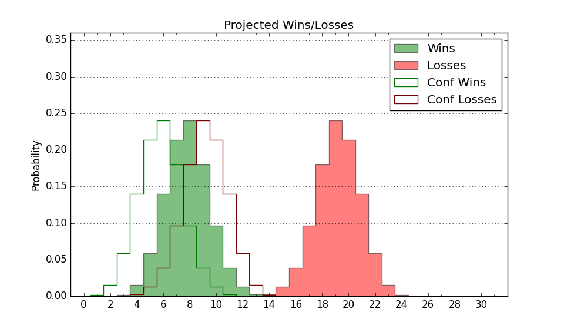

| Home | Game Probabilities | Conferences | Preseason Predictions | Odds Charts | NCAA Tournament |
| City: | Baltimore, Maryland | |
| Conference: | Mid-Eastern (4th)
| |
| Record: | 1-1 (Conf) 3-11 (Overall) | |
| Ratings: | Comp.: -22.8 (353rd) Net: -24.2 (353rd) Off: 98.8 (277th) Def: 123.0 (360th) SoR: 0.0 (175th) |
| Remaining | ||||||
|---|---|---|---|---|---|---|
| Date | Opponent | Win Prob | Pred. | |||
| 1/11 | @ Howard (286) | 14.9% | L 78-90 | |||
| 1/13 | Norfolk St. (159) | 16.3% | L 72-84 | |||
| 1/25 | Coppin St. (363) | 77.2% | W 79-71 | |||
| 2/1 | Md Eastern Shore (360) | 71.1% | W 82-76 | |||
| 2/3 | @ Delaware St. (308) | 19.0% | L 75-86 | |||
| 2/8 | Md Eastern Shore (360) | 71.1% | W 82-76 | |||
| 2/15 | @ South Carolina St. (226) | 9.4% | L 70-87 | |||
| 2/17 | @ North Carolina Central (311) | 19.3% | L 74-85 | |||
| 2/22 | Howard (286) | 37.3% | L 82-86 | |||
| 2/24 | @ Norfolk St. (159) | 5.4% | L 68-88 | |||
| 3/1 | @ Md Eastern Shore (360) | 42.0% | L 78-80 | |||
| 3/3 | Delaware St. (308) | 44.5% | L 79-81 | |||
| 3/6 | @ Coppin St. (363) | 49.9% | L 74-75 | |||
| Previous | Game Score | |||||
| Date | Opponent | Win Prob | Result | Off | Def | Net |
| 11/6 | Mercyhurst (340) | 52.8% | L 73-78 | -6.6 | -2.5 | -9.1 |
| 11/9 | @Longwood (199) | 7.5% | L 66-84 | -6.7 | 5.8 | -0.9 |
| 11/16 | NJIT (355) | 66.5% | W 81-69 | 3.4 | 5.0 | 8.4 |
| 11/20 | @North Carolina A&T (324) | 20.8% | L 83-86 | -3.6 | 9.7 | 6.1 |
| 11/22 | @Buffalo (337) | 23.7% | L 73-82 | -1.5 | -2.5 | -4.0 |
| 11/24 | Towson (211) | 23.9% | L 60-64 | -14.9 | 21.9 | 7.0 |
| 11/27 | @UMBC (252) | 11.2% | L 69-92 | -16.9 | 4.6 | -12.3 |
| 12/7 | @Bowling Green (268) | 12.9% | L 81-102 | 5.4 | -18.9 | -13.6 |
| 12/10 | @Xavier (61) | 1.3% | L 58-119 | -9.8 | -29.5 | -39.4 |
| 12/15 | Campbell (266) | 33.4% | W 86-76 | 19.9 | 3.4 | 23.3 |
| 12/22 | @Iowa St. (8) | 0.3% | L 72-99 | 19.7 | 5.2 | 24.9 |
| 12/29 | @Minnesota (127) | 4.1% | L 68-90 | 13.0 | -10.6 | 2.4 |
| 1/4 | South Carolina St. (226) | 26.1% | L 72-86 | -1.4 | -7.6 | -9.1 |
| 1/7 | North Carolina Central (311) | 44.8% | W 102-98 | 2.3 | 2.4 | 4.8 |
| Stats & Trends | |||||
|---|---|---|---|---|---|
| Current | Day | Week | Month | Season | |
| Composite | -22.8 | +0.3 | +0.3 | -0.6 | -7.6 |
| Comp Rank | 353 | +1 | +2 | +1 | -24 |
| Net Efficiency | -24.2 | +0.4 | +0.8 | +2.0 | -- |
| Net Rank | 353 | +1 | +2 | +1 | -- |
| Off Efficiency | 98.8 | +0.1 | +0.5 | +5.2 | -- |
| Off Rank | 277 | +1 | +12 | +54 | -- |
| Def Efficiency | 123.0 | +0.3 | +0.3 | -3.3 | -- |
| Def Rank | 360 | -- | -- | -4 | -- |
| SoS Rank | 332 | +8 | -38 | +23 | -- |
| Exp. Wins | 7.8 | +0.1 | +0.4 | +0.1 | -3.0 |
| Exp. Conf Wins | 5.8 | +0.1 | +0.4 | -0.4 | -1.5 |
| Conf Champ Prob | 0.1 | -0.0 | -0.1 | -0.6 | -7.2 |

| Advanced Stats | ||
|---|---|---|
| Stat | Value | Rank |
| Off Eff FG % | 0.471 | 287 |
| Off Ast Ratio | 0.120 | 320 |
| Off ORB% | 0.286 | 186 |
| Off TO Rate | 0.156 | 222 |
| Off FT Ratio | 0.322 | 203 |
| Def Eff FG % | 0.589 | 361 |
| Def Ast Ratio | 0.174 | 342 |
| Def ORB% | 0.380 | 359 |
| Def TO Rate | 0.140 | 238 |
| Def FT Ratio | 0.445 | 347 |